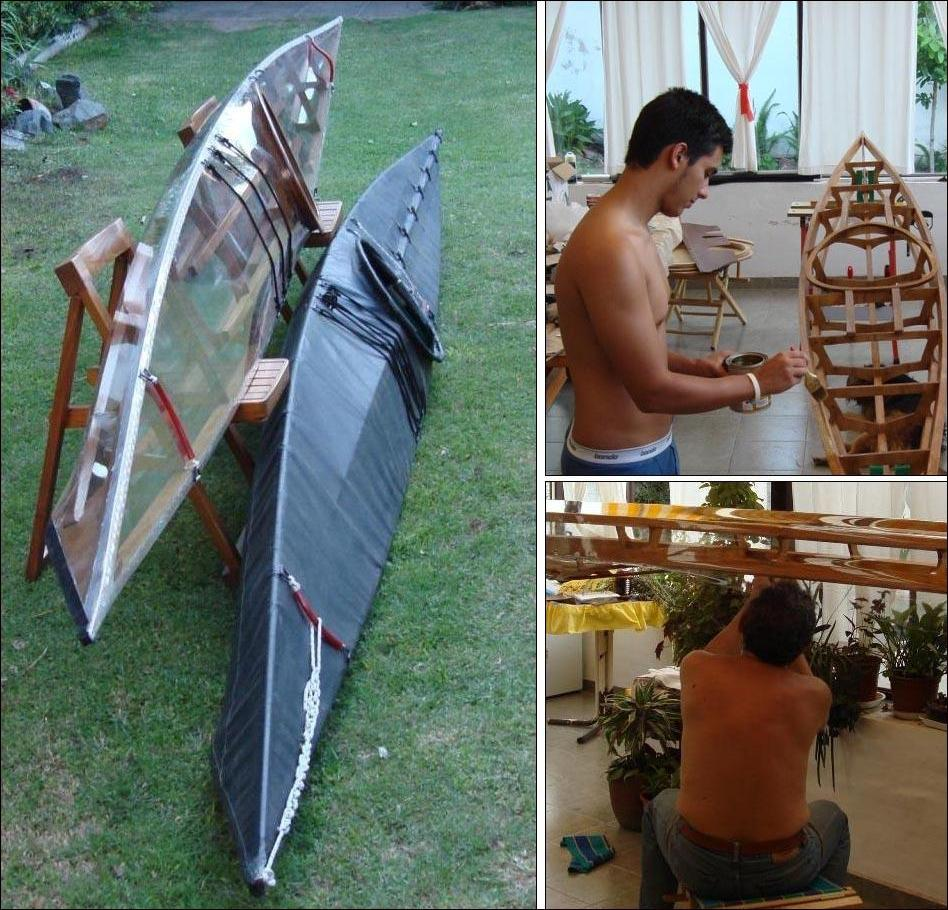

| Sea Rider by Carlos and Emilio Martinez (AR) | Menu Last Page Next Page |
|

Carlos and Emilio Martinez from Argentina display their newly completed clear skin wood Sea Rider along with the Sea Rider folder they completed last year.
The black folding version uses a drybag style "roll-up" aft deck closure.
|
|